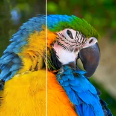

اشباع / سرزندگی

رنگها را قویتر یا ضعیفتر میکند. سرزندگی رنگهای کدر را ملایمتر تقویت میکند و رنگهای قوی را دست نمیزند.
تنظیمات
| تنظیم | نوع | بازه | پیشفرض |
|---|---|---|---|
| اشباع | عدد | -100% تا 100% | 0% |
| ویبرانس | عدد | 1 تا 2 | 1 |

رنگها را قویتر یا ضعیفتر میکند. سرزندگی رنگهای کدر را ملایمتر تقویت میکند و رنگهای قوی را دست نمیزند.
| تنظیم | نوع | بازه | پیشفرض |
|---|---|---|---|
| اشباع | عدد | -100% تا 100% | 0% |
| ویبرانس | عدد | 1 تا 2 | 1 |